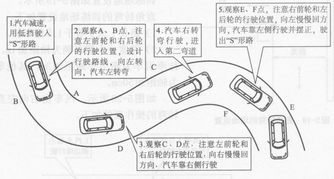

一、操作要求
车辆从弯道的一端前进驶入，减速换挡，以抵挡低速从另一端驶出，行驶中不得挤压路边缘线。

二、评判标准
 中途停车，不合格；
中途停车，不合格；
 车轮轧路边缘线，不合格；
车轮轧路边缘线，不合格；
三、操作提醒
 曲线行驶时一定要注意车速的平稳，打方向时也要记住及时回方向，注意不要停车，还应观察后视镜，注意车尾不要超出或压上标线。
曲线行驶时一定要注意车速的平稳，打方向时也要记住及时回方向，注意不要停车，还应观察后视镜，注意车尾不要超出或压上标线。
四、考试技巧
 车辆驶向曲线行驶考试区。(车内语音提示：下一考试项目曲线行驶，请开始——已进入曲线行驶)。
车辆驶向曲线行驶考试区。(车内语音提示：下一考试项目曲线行驶，请开始——已进入曲线行驶)。
 在进入S弯时，要注意车头的位置，尽量使车辆外前轮靠近弯道右侧边线行驶，用1挡半联动前进，前进过程中不能停车。前进过程中，还应观察左右后视镜，使车辆沿S路行驶。
在进入S弯时，要注意车头的位置，尽量使车辆外前轮靠近弯道右侧边线行驶，用1挡半联动前进，前进过程中不能停车。前进过程中，还应观察左右后视镜，使车辆沿S路行驶。
 向左转弯：车辆靠近右边行驶，当左车角与右边缘线相重合时，方向往左打一圈，同时微调方向，让左车角和右边缘线基本重合，沿着S路向左转弯，车辆就不会压线或出线了。驶过左弯后准备向右转弯。
向左转弯：车辆靠近右边行驶，当左车角与右边缘线相重合时，方向往左打一圈，同时微调方向，让左车角和右边缘线基本重合，沿着S路向左转弯，车辆就不会压线或出线了。驶过左弯后准备向右转弯。
 向右转弯：当左车角慢慢地走完向左转弯的右边缘线时，方向先保持不动，等到车头盖右侧顶点碰到向右转弯的左边缘线时，回正方向，慢慢地往前走一会。
向右转弯：当左车角慢慢地走完向左转弯的右边缘线时，方向先保持不动，等到车头盖右侧顶点碰到向右转弯的左边缘线时，回正方向，慢慢地往前走一会。
 当看到车头盖左侧1/3处和向右转弯的左边缘线碰到时，向右打一圈方向，同时微调方向，使右车角和向右转弯的左边缘线基本重合，沿着S路向右转弯，车辆就不会压线或出线了。
当看到车头盖左侧1/3处和向右转弯的左边缘线碰到时，向右打一圈方向，同时微调方向，使右车角和向右转弯的左边缘线基本重合，沿着S路向右转弯，车辆就不会压线或出线了。
 出弯：当车辆驶出S路，车头对准出口时，迅速回正方向，继续前行驶出曲线行驶考试区域。
出弯：当车辆驶出S路，车头对准出口时，迅速回正方向，继续前行驶出曲线行驶考试区域。